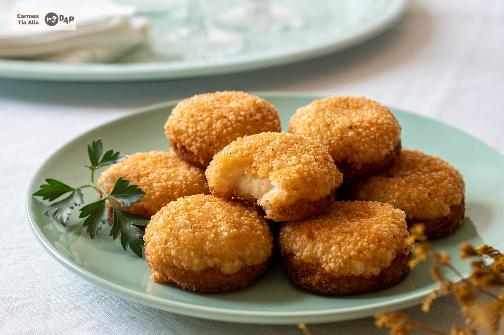
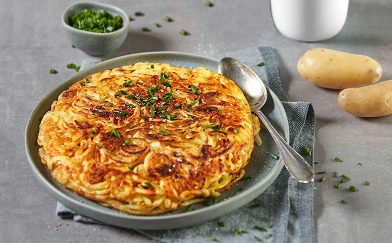

<!DOCTYPE html>
<html lang="en">
<head>
    <meta charset="UTF-8">
    <meta name="viewport" content="width=device-width, initial-scale=1.0">
    <link rel="shortcut icon" href="../../Images/Icon.png" type="image/x-icon">
    <link rel="stylesheet" href="Style/Suiza.Css">
    <title>Document</title>
</head>
<body>
    
</body>
</html>
<header>
    <h1>Recetas de nuestro mundo</h1>
    <nav>
        <ul>
            <li><a href="../../index.html">Inicio</a></li>
            <li><a href="../Recetas.html">Recetas</a></li>
            <li><a href="../../Consejos/Consejos.html">Consejos</a></li>
            <li><a href="../../Nosotros/Nosotros.html">Nosotros</a></li>
        </ul>
    </nav>
</header>

<nav class="Malakoffs ">
<h2>Malakoffs</h2>
<figure></figure>
<p>Ingredientes: </p>

<ul>
    <li>150g de queso rayado</li>
    <li>Un huevo</li>
    <li>25g de harina de trigo</li>
    <li>Un diente de ajo</li>
    <li>Bicarbonato</li>
    <li>pan de molde rebanado</li>
    <li>pimienta negra molida y sal</li>
    <li>Aceite de girasol para freir</li>
    <li>Vino blanco</li>
   </ul> 
    
<p>Preparación: </p>
<ul>
    <li>Tiempo completo 15 minutos</li>
    <li>Cortamos cada una de las rebanadas de pan en cuatro discos</li>
     <li> lo reservamos y usamos un corta pasas pequeño</li>
    <li> Guardamos las esquinas para usar en otras elaboraciones </li>
    <li>si las secamos podemos hacer pan casero</li>
    <li>En un bol mezclamos el queso, la harina de trigo, el diente de ajo rallado, el huevo batido, el vino blanco, el bicarbonato y la nuez moscada. Salpimentamos al gusto y removemos</li>
    <li>trabajamos la mezcla con las manos hasta obtener una masa homogénea y espesa</li>
    <li>Repartimos esta mezcla sobre los discos de pan, procurando que quede bien extendida y compacta</li>
    <li> Los freímos en una sartén con abundante aceite caliente, con la mezcla de queso hacia abajo</li>
    <li>Los volteamos para que dore la cara del pan e, inmediatamente, los retiramos a un plato con papel absorbente</li>
    <li>Servimos calientes y recién hechos.

    </li>
</ul>


</nav>
<section>
<nav class="Paparosti">
    <h2>PAPA ROSTI</h2>
    <figure></figure>
    <p>se necesita una papa se pela , se lava,se ralla, se le echa sal al gusto, se frita y se sirve <br> Es una opción sencilla, fácil y rápida de preparar</p>
</section>
</nav>
<Section>
    <nav class="Meatpie">
        <h2>Meat pie</h2>
        <figure class="Brunch"></figure>
        <p>Ingredientes: </p>
        <ul>
            <p>Para la masa:</p>
            <li>300g de harina </li>
            <li>100g de mantequilla</li>
            <li> 60 ml de leche (tibia) </li>
            <li>60 ml de agua (tibia)</li>
            <li> ½ cucharadita de sal</li>
            <br>
            <p>Para el relleno: </p>
            <li>500 g de ternera , picada o cortada en trozos finos </li>
            <li>50 g de tocino (beicon), finamente picado</li>
            <li>25 g de mantequilla</li>
            <li>1 cebolla grande , picada finamente</li>
            <li>100 ml de vino tinto</li>
            <li>150 ml de caldo de carne</li>
            <li>2 cucharadas de salsa inglesa Worcestershire </li>
            <li>1 cucharada de kétchup</li>
            <li>½ manojo de perejil picado finamente,</li>
            <li>2 pizcas de nuez moscada rallada, </li>
            <li>pimienta recién molida y </li>
            <li>1 cucharada de almidón de maíz</li>
            <p>Para untar a la masa:</p>
            <li>1 yema de huevo</li>
            <li>1 cucharada de leche</li>
            <li>Kétchup</li>
            
        </ul>
        <p>Preparación: </p>
        <p>Ponga a hervir el agua y la leche. Añada la mantequilla y derrita.
            Mezcle la harina y la sal por separado y agregue los líquidos, Amase la masa en una superficie ligeramente enharinada y forme una masa suave y homogénea.
            Cubra la masa y refrigere durante 1 hora.
            <br>Soase la carne con mantequilla y reserve.
            Saltee el tocino y luego, la cebolla.
            Agregue la carne y saltee durante 5 minutos a fuego medio-alto, revolviendo constantemente.
            Desglase con vino tinto y revuelva bien.
            Agregue el caldo, la salsa inglesa, el kétchup y la nuez moscada.
            Cubra y cocine durante 1 hora.
            Disuelva el almidón de maíz en una cucharada de agua y agréguelo a la carne.
            Añada el perejil. Agregue sal y pimienta.
            Cocine a fuego lento durante otros 2 minutos. Apague el fuego.
            Elimine el exceso de salsa y reserve. Deje enfriar la carne completamente.
            Precaliente el horno de convección a 180°C.
            Extienda la masa sobre una superficie ligeramente enharinada, hasta que tenga unos 3 mm de grosor.
            Corte cuatro círculos de 15 cm de diámetro con un cortador de galletas.
            Coloque el círculo de masa dentro de los moldes untados con mantequilla. Rellene con carne y un poco de salsa. Reserve la salsa restante.
            Doble los bordes sobre el relleno.
            Recoja la masa restante y extiéndala de nuevo.
            Corte cuatro círculos de 12 cm de diámetro con un cortador de galletas.
            Haga una pequeña x con un cuchillo en el centro de cada círculo.
            Colóquelos sobre el relleno y presione los bordes para que las dos capas de masa se adhieran.
            Bata la yema de huevo y la leche. Con un cepillo, unte los pasteles y los bordes con la mezcla.
            Hornee en medio del horno durante 40 minutos.
            Sirva los pasteles de carne australianos calientes con kétchup por encima.
            Sirva la salsa reservada por separado.
        <br>
    </nav>
</Section>
<p>
    <footer>
        <p> Creado por Evelyn Dahiana Quirama Arango</p>
    </footer>
</body>
</html>